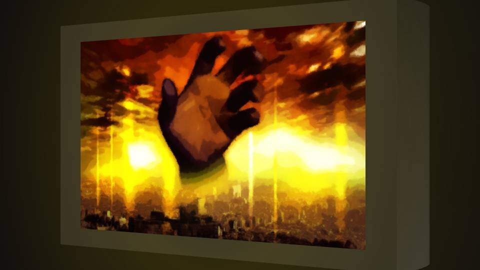
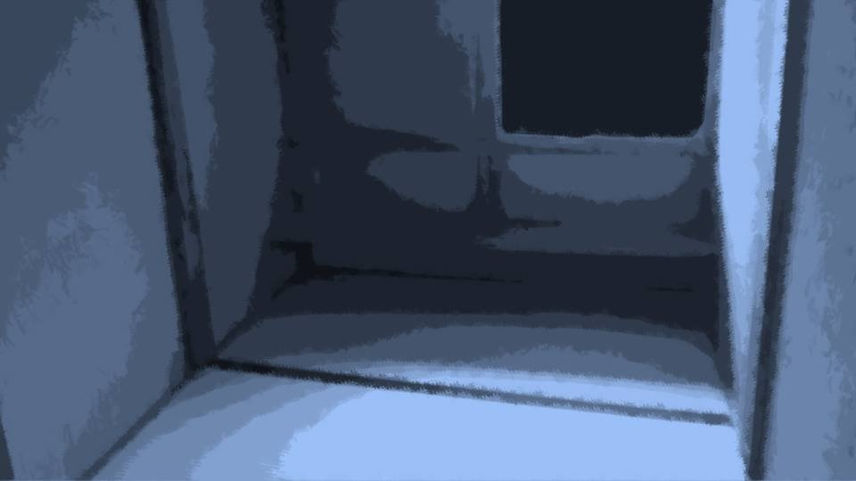
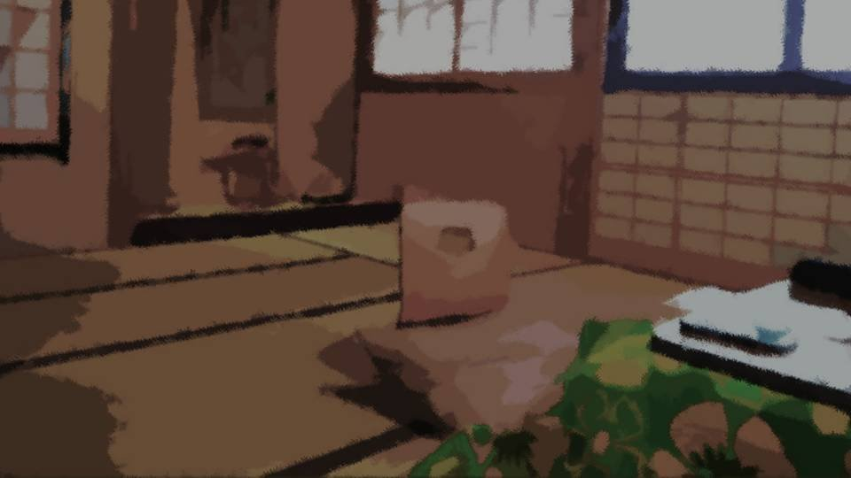
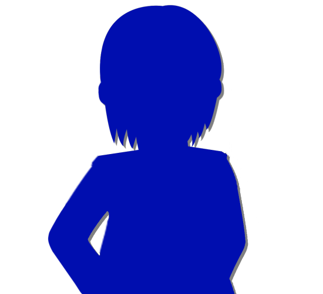
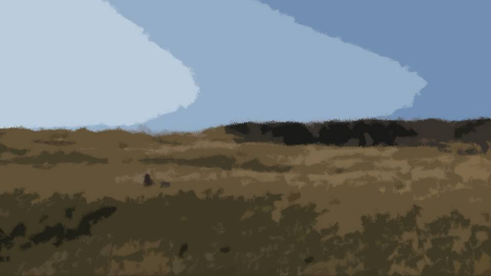
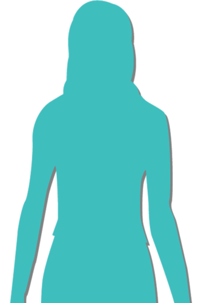
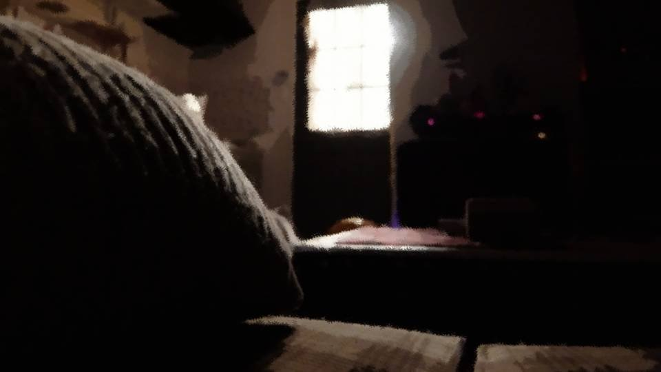

The Tenth Spring
At that moment, my life.
No, the lives of many people, and their fates, were split in two.
No, the lives of many people, and their fates, were split in two.
I've finally made it this far.
I need to get fired up, but I just can't seem to focus.
In this state, there's no way I can break through this situation.
I need to get fired up, but I just can't seem to focus.
In this state, there's no way I can break through this situation.
But maybe that's fine too.
Going down before this giant enemy is life too.
There's no need to put that much into a made-up life.
Going down before this giant enemy is life too.
There's no need to put that much into a made-up life.

"Haah..."
I haven't even cleared it yet, and I'm already getting a little bored of this game.
I work my part-time job, go to drinking parties, and when I have time, I shut myself in my room and play games alone.
These days most games are on smartphones or downloads, but I mostly play physical copies.
I haven't even cleared it yet, and I'm already getting a little bored of this game.
I work my part-time job, go to drinking parties, and when I have time, I shut myself in my room and play games alone.
These days most games are on smartphones or downloads, but I mostly play physical copies.
There were no game consoles in the Arata settlement, so I just used to long for them a little, that's all.
What I love most is that stretch of time when I put the software into the hardware and wait, gripping the controller, for the game to start up.
All at once I slip into the world of the game and turn my eyes away from reality for a while.
The entertainment I couldn't enjoy in the Arata settlement is one of my pleasures, and a way to keep my mind healthy, too.
What I love most is that stretch of time when I put the software into the hardware and wait, gripping the controller, for the game to start up.
All at once I slip into the world of the game and turn my eyes away from reality for a while.
The entertainment I couldn't enjoy in the Arata settlement is one of my pleasures, and a way to keep my mind healthy, too.
Back then, I―
tried to kill Mom.

I still remember it clearly.
Out of nowhere, an unbearable murderous intent toward Mom welled up in me, and I tried to stab her to death.
I was restrained and locked up in the underground storeroom.
Out of nowhere, an unbearable murderous intent toward Mom welled up in me, and I tried to stab her to death.
I was restrained and locked up in the underground storeroom.

For several days I kept passing out and coming to, and Grandma stayed by my side the whole time, watching over me.
That's all I remember.
If Grandma hadn't kept encouraging me, I would no doubt have died in a frenzy.
That's how terrible my murderous intent toward Mom was.
That's all I remember.
If Grandma hadn't kept encouraging me, I would no doubt have died in a frenzy.
That's how terrible my murderous intent toward Mom was.
But a few days later, my frenzy subsided, just like that.
And the moment it did, I was laid up for several more days, this time from exhaustion.
The day I woke up was, if I remember right―
And the moment it did, I was laid up for several more days, this time from exhaustion.
The day I woke up was, if I remember right―

Shiyo 790, April 12―10 years ago.
It was after Uncle Eiichiro's third-year memorial service had ended.
Apparently Auntie and Haruka had both come to the memorial service while I was asleep.
And I'd thought I would get to see Haruka for the first time in ages. What a shame...
It was after Uncle Eiichiro's third-year memorial service had ended.
Apparently Auntie and Haruka had both come to the memorial service while I was asleep.
And I'd thought I would get to see Haruka for the first time in ages. What a shame...

"How about it, Chigaya? Feeling all right now?"
"Mm... I'm all better now!"
"Is that so, is that so. Then that's fine."
"Mm... I'm all better now!"
"Is that so, is that so. Then that's fine."
Grandma gently stroked my head.
And with it, the memory of my violent murderous intent toward Mom.
As that hideous feeling came back to me, my face went stiff, and Grandma didn't miss it.
And with it, the memory of my violent murderous intent toward Mom.
As that hideous feeling came back to me, my face went stiff, and Grandma didn't miss it.
"It's all right, Chigaya. There's nothing to worry about."
Grandma hugged me tight.
Even so, I was terrified.
I was terrified of myself, for having tried to kill Mom when I loved her so much.
Grandma hugged me tight.
Even so, I was terrified.
I was terrified of myself, for having tried to kill Mom when I loved her so much.
"Mm... Where's Mom...?"
"She's in the kitchen right now. Want to see your mom?"
"............"
Would Mom be angry with me? Did she hate me now?
I wanted to see her, but I couldn't say so right away.
"She's in the kitchen right now. Want to see your mom?"
"............"
Would Mom be angry with me? Did she hate me now?
I wanted to see her, but I couldn't say so right away.

"All right, let's go see her together."
Grandma picked me up and carried me out of the room.
I was almost 11, but Grandma lifted me like it was nothing and carried me down the stairs.
I clung to Grandma the whole way.
Tightly, so tightly, I clung on.
I was almost 11, but Grandma lifted me like it was nothing and carried me down the stairs.
I clung to Grandma the whole way.
Tightly, so tightly, I clung on.

"Oh, Chigaya! Are you all right now?"
Seeing me, Mom let out a happy cry.
But I kept my eyes shut, clung to Grandma, and turned my face away.
How was I supposed to look Mom in the face?
Seeing me, Mom let out a happy cry.
But I kept my eyes shut, clung to Grandma, and turned my face away.
How was I supposed to look Mom in the face?
Then, a hand gently stroking my hair.
It was Mom, stroking it.
It was Mom, stroking it.
"Go on, Chigaya, go to your mom."
Mom, just like Grandma, took me up in her arms, though I'd grown much too big to be held.
Mom, just like Grandma, took me up in her arms, though I'd grown much too big to be held.

"There, there, Chigaya. You were scared, weren't you? It's all right now."
At those words, a wail far too terrible to call crying tore my throat apart.
At those words, a wail far too terrible to call crying tore my throat apart.
I wanted to tell Mom I was sorry.
I wanted to tell Mom I loved her so much.
But my sobs got in the way.
Instead, I held on to Mom tight.
I wanted to tell Mom I loved her so much.
But my sobs got in the way.
Instead, I held on to Mom tight.
Mom hugged me back, as if she understood what was in my heart.
Thank goodness. Mom didn't hate me.
We could all go on living happily together again, the same as always.
Those nightmarish few days really were a nightmare―a dream.
So I would tuck the bad dream away in the shadow of a happy reality.
Thank goodness. Mom didn't hate me.
We could all go on living happily together again, the same as always.
Those nightmarish few days really were a nightmare―a dream.
So I would tuck the bad dream away in the shadow of a happy reality.
But it wasn't long before that reality was swallowed up by a bad dream again.


Shiyo 790, April 17―five days after I woke up.
Auntie and Haruka had come to the Arata settlement again.
They'd come for Uncle's third-year memorial service too, but I hadn't gotten to see them.
Auntie and Haruka had come to the Arata settlement again.
They'd come for Uncle's third-year memorial service too, but I hadn't gotten to see them.
"Ahaha! Chiga-nee! Are you all better now!?"
"Mm... I'm all better now!"
Haruka was as bright and lively as ever.
No, she was even livelier than when I'd seen her at New Year's.
And there was a big change in how she looked, too.
"Mm... I'm all better now!"
Haruka was as bright and lively as ever.
No, she was even livelier than when I'd seen her at New Year's.
And there was a big change in how she looked, too.

Haruka's hair, once long and beautiful, had become short.
"Mm... Haruka, that hairstyle looks really good on you!"
"Ehehe, thanks!"
Haruka seemed pretty pleased to have her hairstyle complimented.
I tried stroking Haruka's short hair.
"Ehehe, thanks!"
Haruka seemed pretty pleased to have her hairstyle complimented.
I tried stroking Haruka's short hair.
"Ah, ow!"
The moment I touched her head, Haruka flinched and knocked my hand away.
"Mm... Sorry."
On reflex, I apologized too.
The moment I touched her head, Haruka flinched and knocked my hand away.
"Mm... Sorry."
On reflex, I apologized too.
"Mm... did you hurt your head?"
"Huh? Oh, yeah... a little..."
Haruka looked away, a little awkward.
Child though I was, I wondered if that had been a question I shouldn't ask.
"Huh? Oh, yeah... a little..."
Haruka looked away, a little awkward.
Child though I was, I wondered if that had been a question I shouldn't ask.
"Oh, I'll go check on Kana!"
And with that, Haruka went into the house as if running away from me.
Had I done something I shouldn't have after all...?
Had I done something I shouldn't have after all...?
―Haruka was crawling on all fours after Kana, who was crawling around exploring the house.
Kana must have met Haruka at the memorial service too, since she seemed attached to her and wasn't shy at all.
Kana must have met Haruka at the memorial service too, since she seemed attached to her and wasn't shy at all.

 video: 桜.wmv
video: 桜.wmvI was sitting on a branch of the cherry tree, looking out over the settlement.
From up here, I could see the whole settlement.
The last few cherry blossoms were scattering across the whole settlement.
From up here, I could see the whole settlement.
The last few cherry blossoms were scattering across the whole settlement.
video: 桜.wmvCome to think of it, what had Auntie and Haruka come here for today?
It wasn't a long weekend, and there wasn't any event going on.
For a visit just for fun, the timing was a little forced.
It wasn't a long weekend, and there wasn't any event going on.
For a visit just for fun, the timing was a little forced.
video: 桜.wmv"Hey, Sakura!"
video: 桜.wmvI heard Dad shouting from below.
Then I saw Mom running from the yard toward the woods.
Then I saw Mom running from the yard toward the woods.
video: 桜.wmvI'd never seen Mom run that fast.
I knew the women of Arata were faster on their feet than ordinary people, but even so.
Something seemed seriously wrong.
I stayed where I was and followed Mom with my eyes.
I knew the women of Arata were faster on their feet than ordinary people, but even so.
Something seemed seriously wrong.
I stayed where I was and followed Mom with my eyes.

Toward the woods―

toward the graveyard―and then...

toward the mountain stream...
There was no mistaking it. Mom had headed toward the stream.
But even my eyes couldn't follow her any farther than that.
Besides, it may all be called the stream, but it ran on for kilometers from deep in the mountains.
Even if I searched along the stream, finding Mom would be next to impossible.
But even my eyes couldn't follow her any farther than that.
Besides, it may all be called the stream, but it ran on for kilometers from deep in the mountains.
Even if I searched along the stream, finding Mom would be next to impossible.
video: 桜.wmvDown below, Dad and Grandma had gathered everyone in the settlement and were talking about something.
Then everyone quickly scattered in all directions.
Were they going to search for Mom?
I would climb down and help too.
I was the only one who had clearly seen where Mom went.
Then everyone quickly scattered in all directions.
Were they going to search for Mom?
I would climb down and help too.
I was the only one who had clearly seen where Mom went.
"............?"
Auntie and Haruka were packing up their things.
Were they leaving already, at a time like this?
Auntie and Haruka were packing up their things.
Were they leaving already, at a time like this?

"Oh, Chigaya-chan. We'll be going home now."
"Huh? We're going home already!?"
It seemed Haruka was only now finding out they were leaving, too.
Urgent business was cropping up all over the place.
It seemed Haruka was only now finding out they were leaving, too.
Urgent business was cropping up all over the place.
"Mm... Auntie, did something happen to Mom?"
"U-um...
"U-um...
N-n-nothing's wrong!
Y-your mom had a bit of a fright, it seems, and went running off somewhere, they say.
Everyone's out looking for her, so you don't have to w-worry."
That was a lie, obviously.
Because Auntie's voice was shaking like crazy.
Because Auntie's voice was shaking like crazy.
 video: 桜.wmv
video: 桜.wmvAuntie and Haruka got into Dad's car.
Were they going home in our car?
"Chigaya-chan, please tell your dad we'll leave the car at Arata Station."
"Bye-bye, Chiga-nee!"
Were they going home in our car?
"Chigaya-chan, please tell your dad we'll leave the car at Arata Station."
"Bye-bye, Chiga-nee!"
 video: 桜.wmv
video: 桜.wmvAll I got was a halfhearted high five with Haruka as she reached out the window, and without a proper goodbye, the two of them were gone.
video: 桜.wmvThe moment I'd seen them off, I realized Kana was all alone.
These days, Kana crawled all over the place, so if I took my eyes off her, there'd be trouble.
These days, Kana crawled all over the place, so if I took my eyes off her, there'd be trouble.

Kana was staring at the living room TV, which had been left on.
The cheerful music of a variety show, and Kana staring at it with a face as serious as if she were watching live coverage of the Diet.
The cheerful music of a variety show, and Kana staring at it with a face as serious as if she were watching live coverage of the Diet.
"Mm... Kana, why don't we go for a walk too?"
"Mm-ma-ma?"
"Mm-ma-ma?"
I put on the baby carrier and lifted Kana into it.
I was the only one who knew where Mom had gone.
If I went, I could probably find Mom sooner.
I started to leave the living room―but quickly turned on my heel.
I was the only one who knew where Mom had gone.
If I went, I could probably find Mom sooner.
I started to leave the living room―but quickly turned on my heel.
Oops, oops.
I turned off the TV I'd forgotten to switch off.
The sound of the TV died, and the eerie air of the settlement, emptied of people, crept into the house.
I turned off the TV I'd forgotten to switch off.
The sound of the TV died, and the eerie air of the settlement, emptied of people, crept into the house.
Right. Everyone was out searching now, and there was no one in the settlement.
Right now, the only ones in this settlement were me and Kana.
And since we were about to leave too, the settlement would be empty for a while.
Right now, the only ones in this settlement were me and Kana.
And since we were about to leave too, the settlement would be empty for a while.
I headed straight for the stream.
I didn't pass a single person.
Had everyone gone that far?
These mountains of Arata are very, very wide and deep.
The Arata district is dozens of kilometers from end to end, apparently, so you can't walk the whole thing in a day.
I didn't pass a single person.
Had everyone gone that far?
These mountains of Arata are very, very wide and deep.
The Arata district is dozens of kilometers from end to end, apparently, so you can't walk the whole thing in a day.
That's why flat land like the settlement is so rare.
The flat land in Arata that I know of is the settlement, and―
The flat land in Arata that I know of is the settlement, and―
this graveyard.
I could faintly hear the stream.
Mom had definitely headed toward the stream, but I hadn't been able to follow her with my eyes past that.
And there was no saying she'd stayed by the stream.
I could faintly hear the stream.
Mom had definitely headed toward the stream, but I hadn't been able to follow her with my eyes past that.
And there was no saying she'd stayed by the stream.
Now... this is a problem...
The stream was several kilometers long, so pinning down where Mom was would be hard.
On my own it wouldn't have been a problem, and it wasn't about stamina so much as this: if Kana wanted a diaper change or a feeding, I'd have to head home right away.
For now, Kana seemed to be asleep.
The stream was several kilometers long, so pinning down where Mom was would be hard.
On my own it wouldn't have been a problem, and it wasn't about stamina so much as this: if Kana wanted a diaper change or a feeding, I'd have to head home right away.
For now, Kana seemed to be asleep.
"She's over that way."
Huh?
Who?
Did someone just talk to me?
Who?
Did someone just talk to me?
I looked around, but there was no one.
And Kana was still asleep.
And Kana was still asleep.
"Come on, it's that way."
There it was again...
I headed "that way," as I'd been told.
For some reason, I knew which direction it meant.
I headed "that way," as I'd been told.
For some reason, I knew which direction it meant.
―Before long, the cliff along the stream came into view.
And there, faintly, the presence of people.
There seemed to be two or three of them.
And there, faintly, the presence of people.
There seemed to be two or three of them.

"............?"

It was Mom.
And...
And...

Grandma was there too.
But, what was it... the mood between them didn't seem good...
It even looked like they were arguing.
But, what was it... the mood between them didn't seem good...
It even looked like they were arguing.

............!!
Mom suddenly tried to jump off the cliff.
The sight sent a chill through me, but Grandma immediately held Mom down.
Mom suddenly tried to jump off the cliff.
The sight sent a chill through me, but Grandma immediately held Mom down.
"Let go of me, Mother!"
"Sakura! Stop this foolishness!"
Shouts like that reached me.
The two of them grappled on top of the cliff, and Mom crawled toward the edge.
Mom still seemed set on jumping off the cliff.
"Sakura! Stop this foolishness!"
Shouts like that reached me.
The two of them grappled on top of the cliff, and Mom crawled toward the edge.
Mom still seemed set on jumping off the cliff.
By rights, I should have gone out there and stopped Mom too.
But at 10 years old, I couldn't even accept that Mom was trying to jump, and I just stood there, dazed.
Even at a time like this, Kana slept on, so peacefully it was infuriating.
No, precisely because it was a time like this, I wanted Kana to stay asleep.
But at 10 years old, I couldn't even accept that Mom was trying to jump, and I just stood there, dazed.
Even at a time like this, Kana slept on, so peacefully it was infuriating.
No, precisely because it was a time like this, I wanted Kana to stay asleep.
"Ah...!"
I suddenly let out a small scream.
I suddenly let out a small scream.
Mom had finally fallen off the cliff.
In the nick of time, Grandma caught her by the wrist.
"Mother, let go! You'll fall too!"
"What good does your dying do!? Just climb up, now!"
There was no way she could haul Mom's whole weight up with one arm.
Mom is going to... die.
"What good does your dying do!? Just climb up, now!"
There was no way she could haul Mom's whole weight up with one arm.
Mom is going to... die.
The sound of Mom slamming into the ground, louder than I'd ever imagined, brought me back to myself.

"Sakuraaaa!!"
On reflex, I headed for the spot where Mom had fallen.
But to get down there, I had to go a long way around.
Even on my legs, carrying Kana, it would take at least three minutes no matter how I hurried.
But to get down there, I had to go a long way around.
Even on my legs, carrying Kana, it would take at least three minutes no matter how I hurried.
I held Kana tight in both arms so she wouldn't be jostled, and ran down the slope as fast as I could go.
Just when my frenzy had finally gone away and I'd thought I could get back to my old life, this happened.
Could it have something to do with Auntie and Haruka coming today?
No one had told me anything.
Just when my frenzy had finally gone away and I'd thought I could get back to my old life, this happened.
Could it have something to do with Auntie and Haruka coming today?
No one had told me anything.
No, there were probably hardly any people who knew what was going on.
Perhaps the only one who knew was the one who'd been talking with Mom a moment ago: Grandma.
Perhaps the only one who knew was the one who'd been talking with Mom a moment ago: Grandma.
............?
I saw a figure standing beside the stream and quickly ducked behind a tree.
Mom had to be somewhere around where that figure was standing.
But why?
The moment I saw that person, I'd hidden without thinking.
Something... Because it looked as if the figure was holding something, something strange.
I carefully peeked out to see what was going on.
I saw a figure standing beside the stream and quickly ducked behind a tree.
Mom had to be somewhere around where that figure was standing.
But why?
The moment I saw that person, I'd hidden without thinking.
Something... Because it looked as if the figure was holding something, something strange.
I carefully peeked out to see what was going on.

Right beside the stream, I saw Mom, her arms and legs bent at wrong angles, blood splattered all around.
Mom lay perfectly still under the gaze of the person standing right beside her.
And the person standing beside her was...
Mom lay perfectly still under the gaze of the person standing right beside her.
And the person standing beside her was...

Dad, raising a nata high.
Why... why is Dad here?
Why is he raising a nata?
Wait, wait...
Why... why is Dad here?
Why is he raising a nata?
Wait, wait...
That moment probably lasted only two or three seconds.
But the air in that place froze, and it froze even time.
Even my thinking froze, and I was made to watch that sight for a long, long time.
But the air in that place froze, and it froze even time.
Even my thinking froze, and I was made to watch that sight for a long, long time.
Space and time melted, and from the moment Dad brought the nata down until Mom's head went rolling, it was strangely fast.
It shattered my last hope, 'maybe she's still alive,' in an instant.
It shattered my last hope, 'maybe she's still alive,' in an instant.
Then, footsteps behind me.
I hid behind the tree again.
It seemed Grandma had come down too.
She passed right by me and stood before Dad and Mom.
I hid behind the tree again.
It seemed Grandma had come down too.
She passed right by me and stood before Dad and Mom.

Grandma saw the scene and was speechless for a while.

"Mom, I saw it.
Sakura―you pushed her off, didn't you?"
Pushed Mom off... No, Dad, that's wrong. Grandma...
Pushed Mom off... No, Dad, that's wrong. Grandma...
"This way, it'll look like Sakura died here when somebody cut her head off.
You won't be the one who did it.
If we leave Sakura's death a mystery like this, you won't come under suspicion."
"Kotaro, you...!"
"Kotaro, you...!"
"If there'd been any hope of saving her, even I wouldn't have cut off Sakura's head.
I don't know why you did this, but...
I won't tell anyone."
"............ You're right... It's as good as if I killed her..."
What are they talking about?
Grandma tried to save Mom, didn't she?
"............ You're right... It's as good as if I killed her..."
What are they talking about?
Grandma tried to save Mom, didn't she?
"All right, let's go get everyone."
"Kotaro, you hide that nata properly, you hear?"
"I know."
Dad stayed expressionless the whole time he talked with Grandma.
"Kotaro, you hide that nata properly, you hear?"
"I know."
Dad stayed expressionless the whole time he talked with Grandma.
I held my breath until I couldn't hear their footsteps anymore.
Only then did I notice: I was drenched in cold sweat, my body shaking with a heartbeat so fast I thought it might wake Kana.
Mom killed herself, and Dad cut off her head.
The beheading was to keep everyone from thinking Grandma had killed her.
Only then did I notice: I was drenched in cold sweat, my body shaking with a heartbeat so fast I thought it might wake Kana.
Mom killed herself, and Dad cut off her head.
The beheading was to keep everyone from thinking Grandma had killed her.
But why had Grandma said she was the one who killed her?
And why would Mom throw herself off a cliff in the first place?
And what on earth had Auntie and Haruka come here to...
And why would Mom throw herself off a cliff in the first place?
And what on earth had Auntie and Haruka come here to...
―I stepped unsteadily out from behind the tree and went toward Mom.
Guts had burst out of Mom's body.
When I butchered game, it never bothered me at all, but this time the grotesqueness and the stench of blood made me sick.
When I butchered game, it never bothered me at all, but this time the grotesqueness and the stench of blood made me sick.
Just like Dad said, Mom must have been dead the moment she landed here.
Even so, cutting off her head was something I could never do, even if I were told to.
What had Dad been feeling when he cut off Mom's head?
Even so, cutting off her head was something I could never do, even if I were told to.
What had Dad been feeling when he cut off Mom's head?
"Uu...
Uughhh..."
I heard Kana's little cries coming from against my chest.
It seemed she'd woken up.
I heard Kana's little cries coming from against my chest.
It seemed she'd woken up.
"Mm... Kana, let's go home."
I could never let Kana see something like this.
I turned my back on Mom right away and walked toward the settlement.
The grown-ups would take care of the rest.
I could never let Kana see something like this.
I turned my back on Mom right away and walked toward the settlement.
The grown-ups would take care of the rest.
Before long, Kana's crying turned into real wailing.
"Mm... What's wrong? Kana, there's nothing to be scared of, okay? Sis is here, so there's nothing to be scared of, okay?"
That's what I meant to say, but my voice didn't come out as a voice at all.
"Mm... What's wrong? Kana, there's nothing to be scared of, okay? Sis is here, so there's nothing to be scared of, okay?"
That's what I meant to say, but my voice didn't come out as a voice at all.
That's when I realized I was crying myself.
My crying was louder than Kana's.
I held Kana tight... and kept leaning on Kana.
My crying was louder than Kana's.
I held Kana tight... and kept leaning on Kana.
Kana, Sis is right here with you.
So, Kana, you stay right here with Sis too.
So, Kana, you stay right here with Sis too.
"Haah..."
I finally got this far, and it's game over...
On my eighth retry, I thought I'd finally made it to the checkpoint, but an instant-death trap was lying in wait one step before it.
I finally got this far, and it's game over...
On my eighth retry, I thought I'd finally made it to the checkpoint, but an instant-death trap was lying in wait one step before it.
I turned off the game console and switched over to the TV.

"Today Tokyo City was covered by a high-pressure system extending from the south, and temperatures climbed sharply!
At the same time strong winds blew, and pollen counts―"
Oh, so it's that windy today.
I've been shut in the whole time, so I didn't notice.
And besides―
Oh, so it's that windy today.
I've been shut in the whole time, so I didn't notice.
And besides―
"Today early-blooming cherries began to bloom in Tokyo City as well! And the bloom forecast for the Somei-yoshino cherries proper is―"
The season I hate most is coming.
The season when the flower that bears Mom's name blooms.
The season when Mom died.
The season when I wanted to kill Mom.
A season I should abhor.
The season I hate most is coming.
The season when the flower that bears Mom's name blooms.
The season when Mom died.
The season when I wanted to kill Mom.
A season I should abhor.
Misfortune comes riding on the spring wind.
Feeding on the breath of spring, something you could call a curse or a devil creeps up on me.
The warm season, the season that makes you feel the pulse of life―
Feeding on the breath of spring, something you could call a curse or a devil creeps up on me.
The warm season, the season that makes you feel the pulse of life―
I... hate spring.
Read ✓ Next in this arc →